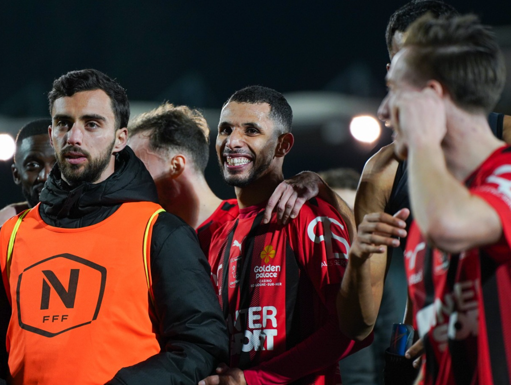
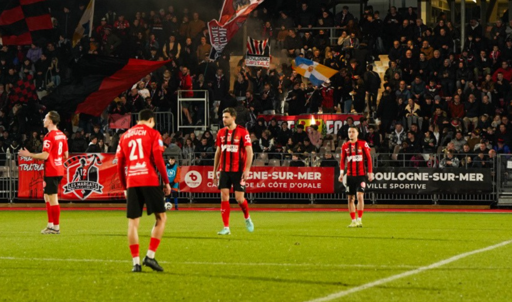
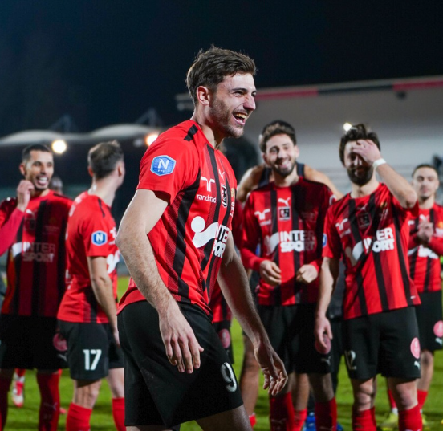

📸 @arthurbrg_pro

📸 @arthurbrg_pro

📸 @arthurbrg_pro
Ce que vous trouverez ici
- 📊 Les joueurs et leurs statistiques détaillées
- 🏆 Classements mis à jour chaque journée
- 📸 Une communauté qui vit le foot français
- 💸 Le récap de tout les transferts en N1
- 📰 Toute l’actu club par club
Soutenir le projet ?
Ce site est gratuit, tout comme l'intégralité des contenus proposés par 3ème Niveau. Un petit don pour l’aider à grandir ?
Faire un don 💙